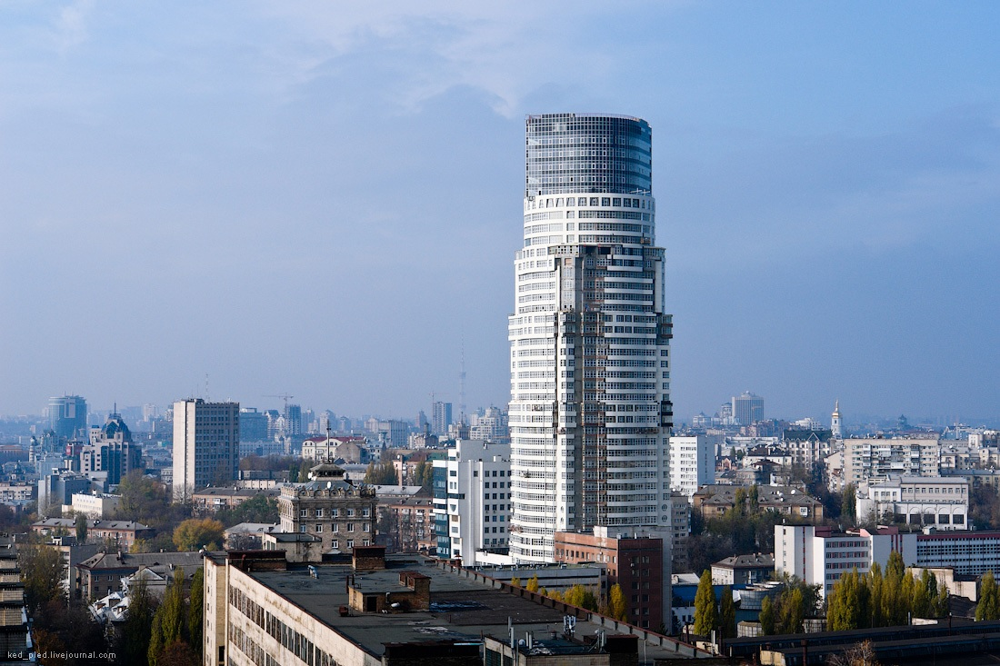

КАРПАТИ

-
Карпати - гірська система на сході Центральної Європи, на території:
України, Угорщини, Чехії, Польщі, Словаччини, Румунії, Сербії, та
Австрії. Простягається від околиць Братислави до Залізних Воріт на
1500 км, утворюючи опуклу дугу, що замикає Середньодунайську рівнину.
Саме у цих горах я побував минулого літа та й не тільки минулого
КИЇВ

«Батьківщина-Мати» — монументальна скульптура в Києві.
Офіційного рішення щодо перейменування монумента «Батьківщина-Мати» на
«Україна-Мати» до 24 серпня 2023 року, як було заявлено напередодні,
Міністерство культури та інформаційної політики України не ухвалило.
Розташована на високому правому березі річки Дніпро, на території
Національного музею історії України у Другій світовій війні. Відкрита у
1981 році. Є найвищою монументальною скульптурою в Європі. Автор монумента
— український скульптор Василь Бородай.
Спочатку монумент замислювався як символ не Батьківщини, а Перемоги, проте
назва «Батьківщина-Мати» увійшла до ужитку майже одразу ж після
зведення
Перший проєкт «Батьківщини-Матері» розробив ще у 1970-х роках скульптор
Євгеній Вучетич з Москви. За його проєктом, передбачалося вкрити фігуру
жінки тонким шаром золота, щоб виблискувала на сонці, а нижче, на схилах,
поставити напівоголених велетнів-вояків до 30 метрів заввишки.
У 1974 році, після смерті Євгенія Вучетича, проєкт взяв на себе
український скульптор Василь Бородай, народний художник УРСР і СРСР. Він
здійснив деякі зміни в проєкті скульптури та почав її будівництво. Також
допомагали інші скульптори: Фрідріх Согоян і Василь Вінайкін, а також
архітектори Віктор Єлізаров, Георгій Кислий, Микола Фещенко.
Спочатку передбачалося, що на постаменті підноситиметься 90-метрова
бронзова з позолотою фігура жінки. Біля підніжжя статуї з 30-метрової
висоти повинен був текти до Дніпра водоспад, з обох боків якого воїни
форсували річку.
За словами Микити Кальченка, сина Галини Кальченко, прообразом монументу
була не його мати, як багато хто стверджував
Андрі́ївська це́рква — православна церква на честь Святого Андрія у стилі
бароко, пам'ятка архітектури та монументального живопису XVIII ст.
світового значення у Києві, споруджена за проєктом видатного архітектора
Бартоломео Растреллі. Входить до складу Національного заповідника «Софія
Київська». Церкву запропоновано внести до списку Всесвітньої спадщини
ЮНЕСКО. 18 жовтня 2018 року Верховна Рада України ухвалила закон «Про
особливості користування Андріївською церквою Національного заповідника
«Софія Київська», на підставі якого Андріївська церква передана у
безоплатне користування Вселенському патріархату, і у ній облаштована
Ставропігія Константинопольського патріархату, при цьому церква й надалі
залишається музеєм у складі Національного заповідника «Софія Київська».

Хмарочос планували почати споруджувати ще наприкінці 2003 року і закінчити
наприкінці 2007. До 2006 року встигли вирити лише котлован, пізніше
«залили» фундамент. 13 березня 2008 року ТОВ «Житлобуд» отримав дозвіл від
інспекції київського архітектурно-будівельного контролю на будівництво
офісно-житлового комплексу. Тоді ж почалося будівництво першого поверху.
10 березня 2009 року офісна частина досягла своєї максимальної висоти. У
ході будівництва поступово змінювався вигляд будівлі і навіть кількість
житлових поверхів висотної частини зросла з 37 до 47. У квітні 2010 року
18-поверхову офісну частину ввели в експлуатацію. У вересні 2010 року
будівля досягла висоти 143 метри, перевищивши при цьому висоту найвищого
будинку України — БФК Гуллівера (141,2 метри). 8 листопада 2010 року
почалося будівництво 46 поверху. 8 березня 2011 року досягнуто
максимальної висоти хмарочоса, збудовано всі 47 поверхів, почалося
підготовка до спорудження скляного фасаду на верхівці будівлі. Під час
будівництва, коли споруда досягала своєї максимальної висоти, ЮНЕСКО
почало вимагати знищення хмарочосу, через те, що вежа псує краєвид на
Києво-Печерську Лавру. Також серед варіантів нейтралізації псування
краєвиду є заміна фасаду на дзеркальний, або зменшення поверховості на 12
поверхів.